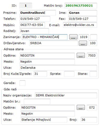
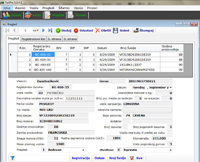
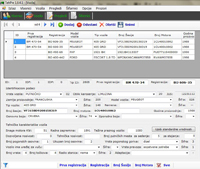
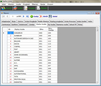
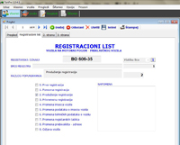
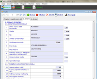
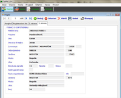

Tehnički pregled - aktuelna verzija 1.0.4.1.

Program za obradu podataka o tehničkom pregledu i štampanje formulara
- Unos, izmena i brisanje podataka o vlasniku vozila (fizička i pravna lica).
- Filtriranje po matičnom broju, imenu i prezimenu, odnosno nazivu kad su u pitanju pravna lica.
- Unos, izmena i brisanje podataka o vozilu.
- Filtriranje po registraciji, broju šasije i broju motora.
- Unos, izmena i brisanje podataka o tehničkom pregledu vozila izabranog iz tabele.
- Filtriranje po registraciji, broju šasije i datumu.
- Program generiše registracioni list (3 strane).
- Štampanje registracionog lista.
- Pregled, dodavanje, izmena i brisanje šifarnika (marke vozila, tip vozila, namena vozila, firma, zanimanje, opštine, delatnoszi, zemlje, boje, gorivo, vrste pregleda, razlog pregleda, vrste prevoza, vrste vozila, vuče..).
Change log
     Verzija 1.0.4.1
- Isključena mogućnost upisivanja podataka u poljima za vozila, ako ne postoji nijedno vozilo.
Verzija 1.0.4.0
- U štampanju zapisnika ubačen matični broj firme.
Verzija 1.0.3.9
- Ispravke u štampanju zapisnika (broj osovina, boje).
Verzija 1.0.3.8
- Ispravke u šifarnicima.
- Ispravke u vozilima.
Verzija 1.0.3.7
- Ubačen combobox za JUS u pregledima.
- Urađeno štampanje JUS oznake u izveštaju.
Verzija 1.0.3.6
- Ispravljena greška u snimanju pregleda kod dodavanja.
- Ubačen textbox za JUS kod vozila.
Verzija 1.0.3.5
- Prva instalirana verzija.